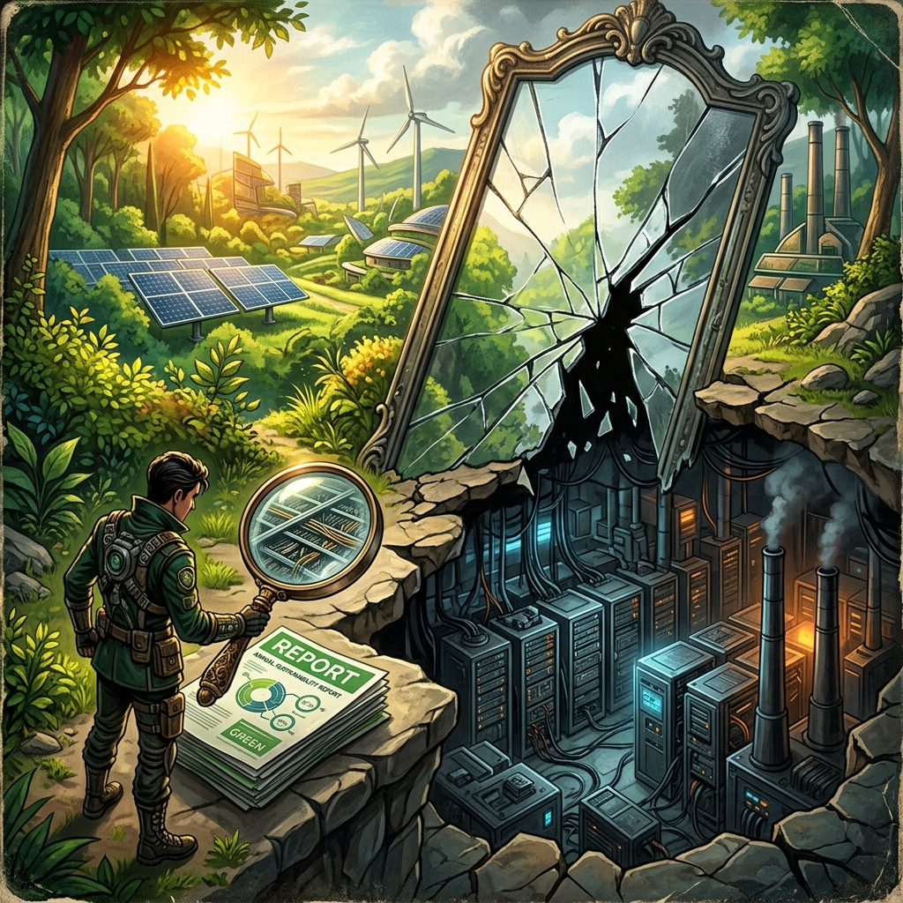

« "Un rapport de durabilite d'entreprise est un document dans lequel une organisation explique avec soin comment elle mesure ses progres vers des objectifs qu'elle a elle-meme definis, selon des methodologies qu'elle a elle-meme choisies, verifiees par des auditeurs qu'elle a elle-meme mandates."Observation d'un analyste specialise en reporting ESG »

Amsterdam, siege europeen d'une grande entreprise technologique. Printemps 2026.
La salle de conference est lumineuse, avec vue sur les canaux. Sur l'ecran, les graphiques sont tous verts, toutes les courbes descendent dans le bon sens. Le directeur RSE presente avec une conviction manifeste les resultats de l'annee ecoulee. Emissions en baisse de 12%. Part des energies renouvelables montee a 78%. Consommation d'eau par megawatt-heure reduite de 9%. L'objectif de neutralite carbone 2030 reste dans les clous.
Dans le couloir, a quelques metres de la salle, Marta Kowalski attend. Elle est chercheuse en durabilite numerique a l'Universite Technique de Delft et elle a passe les six derniers mois a tenter de verifier de maniere independante les chiffres que son interlocuteur est en train de presenter aux journalistes invites. Elle a rencontre des obstacles methodologiques qu'elle qualifiera plus tard, avec la precision temperee des universitaires, de considerables.
Elle n'accuse personne de mentir. Ce serait trop simple. Ce qu'elle a trouve, c'est quelque chose de plus difficile a saisir et, en un sens, de plus troublant : une forme de verite selective. Des chiffres exacts dans le perimetre choisi. Un perimetre choisi pour etre favorable. Et une absence totale de mauvaise foi apparente chez les personnes qui ont construit ce rapport, ce qui est peut-etre la partie la plus inquietante.
Ce chapitre est consacre a cette zone grise. Entre ce que l'industrie numerique declare et ce que les mesures independantes revelent. Entre les progres reels et la communication qui les habille. Entre l'ambition sincere et les structures d'incitation qui la distordent. Et, en contrepoint, quelques signaux genuinement encourageants qui emergeraient des materiaux de la physique fondamentale.
Le grand ecart entre bilan declare et bilan reel
Il y a un chiffre que les grandes entreprises technologiques n'aiment pas mentionner dans leurs rapports de durabilite. En 2023, Google a publie ses donnees d'emissions de CO2 avec une transparence inhabituelle. Ses emissions totales avaient augmente de 48% entre 2019 et 2023. Pas diminue. Augmente. Microsoft a publie des donnees similaires : ses emissions de CO2 equivalent avaient progresse de 29% entre 2020 et 2023.
Ces chiffres coexistent dans les memes documents avec des engagements de neutralite carbone d'ici 2030 pour l'un et de negativite carbone d'ici 2030 pour l'autre. Ce n'est pas une contradiction que les entreprises cherchent a cacher : elles l'expliquent, invoquent la croissance rapide de leurs activites IA comme facteur exceptionnel, et maintiennent que leur trajectoire de decarbonation reste valide a long terme. Mais la coexistence de ces deux informations dans le meme rapport merite qu'on s'y arrete.
Pour comprendre comment cela est possible, il faut entrer dans la machinerie comptable qui sous-tend tout bilan carbone d'entreprise.
Les trois scopes et l'art du perimetre
Le langage dominant de la comptabilite carbone en entreprise est celui du Greenhouse Gas Protocol, un standard elabore dans les annees 2000 par un consortium d'organisations internationales. Il decoupe les emissions en trois categories appelees scopes.
Le scope 1 couvre les emissions directes de l'entreprise : le gaz brule dans ses propres installations, le carburant de sa flotte de vehicules, les fluides frigorigenes qui s'echappent de ses climatiseurs. Pour une entreprise tech sans usines lourdes ni flotte importante, c'est generalement le poste le plus faible.
Le scope 2 couvre les emissions liees a l'electricite et la chaleur achetees. C'est la categorie sur laquelle les engagements des entreprises tech portent le plus souvent : en achetant des certificats d'energie renouvelable ou en signant des contrats d'approvisionnement direct avec des producteurs solaires ou eoliens, une entreprise peut ramener son scope 2 comptable a zero. Ce qui ne veut pas dire que l'electricite qu'elle consomme a cet instant T ne provient pas d'une centrale au charbon, mais c'est une autre question.
Le scope 3 couvre tout le reste : les emissions generees par la fabrication des equipements que l'entreprise achete, par les deplacements de ses employes, par l'utilisation de ses produits par ses clients, par sa chaine d'approvisionnement en amont et en aval. Pour une entreprise technologique, ce poste represente generalement entre 70 et 90% de l'empreinte carbone totale.
Dire qu'on est neutre en carbone sur les scopes 1 et 2, c'est l'equivalent de declarer qu'on n'utilise plus de plastique dans son bureau tout en gerant une usine de production de plastique. L'intention est peut-etre sincere. La communication est structurellement trompeuse.
Or le scope 3 est precisement le perimetre le moins bien mesure, le moins bien verifie et le moins bien couvert par les engagements. La raison en est pratique : les donnees necessaires pour calculer les emissions scope 3 dependent de centaines de fournisseurs, de comportements d'utilisateurs et de chaines logistiques complexes que l'entreprise ne controle pas et ne peut pas mesurer directement. Il faut utiliser des estimations, des moyennes sectorielles, des modeles. Le resultat est une incertitude de mesure qui peut atteindre un facteur deux ou trois.
La fabrication d'un serveur represente, selon les etudes de cycle de vie disponibles, entre 50 et 80% de son empreinte carbone totale sur sa duree de vie entiere. Dit autrement : la majorite de l'impact environnemental d'un data center se produit avant meme que le premier bit de donnees soit traite. Pourtant, les engagements de neutralite carbone des operateurs de data centers portent presque exclusivement sur la phase d'operation, c'est-a-dire sur les 20 a 50% restants.
Emissions Google (2019 a 2023) +48% publie par Google dans son rapport durabilite 2023
Emissions Microsoft (2020 a 2023) +29% publie par Microsoft dans son rapport durabilite 2023
Part du scope 3 dans l'empreinte tech 70 a 90% selon les etudes de cycle de vie independantes
Fabrication d'un serveur vs usage 50 a 80% de l'empreinte se produit avant la mise en service
Les certificats d'energie renouvelable : ce qu'ils font et ce qu'ils ne font pas
L'instrument le plus largement utilise pour decarboner comptablement le scope 2 est ce qu'on appelle en Europe les Garanties d'Origine (GO) et aux Etats-Unis les Renewable Energy Certificates (REC). Le principe est simple : quand un producteur d'energie renouvelable injecte un megawattheure sur le reseau, il recoit un certificat qui atteste de cet acte. Ce certificat peut etre vendu separement de l'electricite elle-meme a un consommateur qui veut compenser sa propre consommation d'electricite non renouvelable.
L'acheteur de ce certificat peut comptabiliser le megawattheure correspondant comme renouvelable dans son bilan, meme si, physiquement, l'electricite qu'il consomme a cet instant T provient d'une centrale au charbon en Pologne.
Les defenseurs de ce systeme font valoir que l'achat de ces certificats finance quand meme la production renouvelable et contribue a son developpement. C'est partiellement vrai. Les critiques font valoir que le decoupage entre le certificat et l'electricite physique cree une fiction comptable qui n'a aucun effet sur les emissions reelles au moment de la consommation. C'est aussi partiellement vrai.
La distinction que Google a eu le merite de formuler clairement, avec son objectif 24/7 carbon-free decrit dans le chapitre precedent, est celle-ci : ce qui compte d'un point de vue climatique, ce n'est pas la moyenne annuelle mais la correspondance temporelle et geographique. Un kilowattheure consomme a trois heures du matin en hiver dans un data center de Finlande ne peut pas etre comptabilise comme vert parce qu'on a achete en juillet un certificat correspondant a de l'electricite solaire produite en Espagne.
Cette distinction, intuitivement evidente, est encore ignoree par la grande majorite des entreprises qui communiquent sur leur neutralite carbone.
L'anatomie du greenwashing et de ses zones grises
Je veux prendre soin de distinguer plusieurs categories de ce qu'on appelle communement greenwashing, parce que les mettre dans le meme sac produit une accusation indifferenciee qui n'aide pas a comprendre ce qui se passe reellement.
Ce qui est du greenwashing caracterise
Il existe des pratiques qui meritent pleinement le terme. La compensation carbone de mauvaise qualite est la plus documentee. Des entreprises acheteent des credits carbone correspondant a la preservation de forets qui n'etaient de toute facon pas menacees, ou a des projets de distribution d'ampoules basse consommation dont l'impact reel ne correspond pas aux credits vendus. Une enquete publiee par le Guardian et plusieurs partenaires en 2023 a montre que plus de 90% des credits de forets tropicales certifies par Verra, le principal certificateur mondial, etaient des 'credits fantomes' sans impact reel verifiable. Plusieurs grandes entreprises tech avaient base une partie de leurs revendications de neutralite carbone sur ces credits.
L'annonce d'objectifs ambitieux sans plan credible est une autre forme caracterisee. Annoncer la neutralite carbone en 2030 sans disposer en 2026 d'une feuille de route technique detaillee sur la maniere d'y parvenir, sans budget alloue specifiquement, sans mecanisme de suivi independant, c'est faire de la communication future sans engagement present. La difference avec un engagement serieux est mesurable : un engagement serieux se traduit par des changements dans les decisions d'achat, les contrats fournisseurs, les specifications produits, immediatement, pas seulement dans les rapports annuels.
Ce qui est simplification legitime
Il y a cependant une zone moins sombre. Communiquer sur des progres reels mais partiels, sans mentionner les aspects moins favorables, n'est pas necessairement de la mauvaise foi deliberee. Toute communication simplifie. La question est de savoir si la simplification cree une impression fausse chez un lecteur raisonnablement attentif.
Une entreprise qui annonce avoir atteint 100% d'energies renouvelables, entendu comme 100% de certificats achetes correspondant a sa consommation annuelle, ne ment pas sur le chiffre. Elle simplifie sur la signification. Un lecteur non averti peut croire que l'electricite physique qui alimente ses serveurs est verte. Elle ne l'est pas necessairement. Mais l'entreprise n'a pas dit cela.
Cette zone de simplification merite la regulation, pas necessairement la condamnation morale. L'etiquetage obligatoire avec des definitions normalisees et verifiables independamment resoudrait une grande partie de ces ambiguites.
Ce qui est ambition sincere avec delais sous-estimes
Il y a enfin une troisieme categorie, que j'ai tendance a considerer comme la plus courante dans l'industrie tech americaine et europeenne. Des equipes RSE travaillent serieusement, disposent de budgets croissants, ont convaincu leurs directions generales que la durabilite est un enjeu strategique. Elles fixent des objectifs ambitieux parce que c'est ce que les investisseurs, les clients et les regimes reglementaires attendent. Elles sous-estiment systematiquement la difficulte a cause d'un biais optimiste que les humains ont en general sur leurs capacites futures.
Quand Microsoft annonce en 2020 qu'elle sera carbone negative en 2030, la direction generale y croit probablement. Ce qu'elle ne mesure pas bien en 2020, c'est l'acceleration des deployements IA qui va multiplier sa consommation electrique d'un facteur plusieurs dans les quatre annees suivantes. Personne ne l'avait prevue avec cette precision. Ce n'est pas du mensonge. C'est de la planification dans un contexte d'incertitude radicale.
La distinction entre mensonge delibere, simplification commode et ambition mal calibree n'est pas anecdotique. Elle determine la reponse appropriee : la premiere appelle la sanction, la deuxieme la regulation, la troisieme le soutien methodologique et la transparence forcee.
Le cycle de vie des equipements : la moitie oubliee
Il y a une experience de pensee simple qui illustre un angle mort majeur du debat sur l'impact environnemental du numerique. Imaginez deux data centers strictement identiques en termes de consommation electrique operationnelle. L'un renouvelle ses serveurs tous les trois ans, achetant systematiquement les modeles les plus recents et les plus performants. L'autre fait durer ses equipements dix ans, acceptant une performance inferieure mais evitant neuf annees de fabrication de serveurs de remplacement. Si les deux data centers sont alimentes par la meme electricite renouvelable, lequel a l'empreinte environnementale la plus faible ?
La reponse est evidente. Et pourtant, la question du cycle de vie des equipements est presque absente des rapports RSE de l'industrie tech.
La fabrication d'un GPU : un voyage a travers la chimie des terres rares
Un GPU de derniere generation comme ceux qui equipent les data centers IA en 2026 contient plusieurs dizaines de materiaux differents. Le processus de fabrication mobilise des equipements de lithographie qui consomment des centaines de kilowatts. Les salles blanches doivent etre maintenues en temperature, pression et proprete extremes en permanence. Les produits chimiques utilises pour graver, deposer et nettoyer les couches successives du circuit sont en partie des gaz a effet de serre puissants.
L'empreinte carbone de fabrication d'un GPU H100 n'est pas publiee par Nvidia. Les estimations disponibles dans la litterature academique et industrielle, basees sur des methodes de cycle de vie appliquees a des puces comparables, suggerent des valeurs de l'ordre de plusieurs centaines de kilogrammes de CO2 equivalent par unite, auxquels s'ajoutent les emissions liees aux materiaux critiques, au transport et a l'assemblage des systemes complets.
Un systeme GB200 de Nvidia, qui assemble plusieurs dizaines de GPU avec leur infrastructure de connexion et de refroidissement en un supercalculateur de 1,36 tonne comprenant 1,2 million de pieces, represente un investissement en carbone de fabrication considerabel. Ce chiffre n'est pas public. Il ne figure dans aucun rapport de durabilite. Et c'est precisement parce qu'il est inclus dans le scope 3, ce perimetre que personne ne mesure bien.
La duree de vie comme levier neglege
La duree de vie moyenne d'un serveur dans un data center commercial etait de cinq a sept ans dans les annees 2010. Elle a tend a raccourcir dans les data centers IA, certains operateurs renouvelant leurs GPU tous les deux a trois ans pour rester a la pointe des performances.
Cette acceleration est comprehensible economiquement : un GPU de derniere generation peut offrir cinq a dix fois plus de performance par watt que le modele de trois ans qu'il remplace. Si le cout du compute est le facteur limitant du business, le renouvellement rapide est rationnel du point de vue de l'operateur. Il est desastreux du point de vue de l'empreinte environnementale globale.
Des recherches menees par des groupes comme le Shift Project en France ont montre que faire passer la duree de vie moyenne d'un smartphone de deux ans a quatre ans reduirait son empreinte carbone totale de 40 a 50%. Le meme calcul s'applique aux serveurs, avec des ordres de grandeur plus importants par unite mais des volumes plus faibles. L'allongement de la duree de vie des equipements numeriques est l'une des actions les plus efficaces par euros investi pour reduire l'impact environnemental du numerique. Et c'est aussi l'une des moins encouragees par les modeles economiques actuels de l'industrie.
Les dechets electroniques : cinquante millions de tonnes qui disparaissent
Le Global E-waste Monitor, publie sous l'egide des Nations Unies, estimait que le monde a genere environ 62 millions de tonnes de dechets electroniques en 2022 (62 Mt selon le Global E-waste Monitor 2024), avec une progression de 2 a 3 millions de tonnes par an. C'est le flux de dechets le plus rapidement croissant de la planete.
22,3% de ces dechets sont collectes et traites dans des filieres formelles de recyclage. Le reste est soit stocke dans des garages et sous-sols chez les particuliers, soit exporte vers des pays en developpement ou il est demantele de maniere artisanale dans des conditions sanitaires et environmentales problematiques. Les filieres informelles de recyclage au Ghana, au Nigeria, en Inde et en Chine exposent les travailleurs a des metaux lourds et des composants toxiques sans protection adequate.
Les GPU et serveurs en fin de vie des data centers entrent dans ce flux. Certains grands operateurs ont des programmes de recyclage structures avec des partenaires certifies. Mais ces programmes sont volontaires, leurs resultats sont rarement audites de maniere independante, et ils ne couvrent pas l'ensemble du parc equipements.
Il y a une ironie supplementaire dans la situation des metaux critiques contenus dans ces equipements. On extrait du cobalt en Republique Democratique du Congo dans des conditions souvent terribles. On l'integre dans des batteries et des circuits. On utilise ces equipements quelques annees. On les jette dans des filieres qui ne recuperent pas le cobalt. Et on retourne extraire du cobalt en Republique Democratique du Congo. La boucle n'est pas fermee. Elle pourrait l'etre techniquement. Elle ne l'est pas economiquement, parce que l'extraction reste moins chereque le recyclage tant que les couts environnementaux exteriorisent la plupart de leurs impacts negatifs.
Un kilogramme de cobalt recycle d'une batterie en fin de vie a une empreinte carbone environ vingt fois plus faible qu'un kilogramme de cobalt extrait d'une mine congolaise. Tant que les deux se vendent au meme prix sans prime pour l'origine, le marche n'a aucune raison de privilegier le second.
Le Green IT : de la rhetorique aux pratiques reelles
Le terme Green IT existe depuis les annees 2000. Il a ete tour a tour un label marketing, un domaine de recherche serieux, une discipline professionnelle emergente et un sujet de conference. En 2026, il est tout cela a la fois, dans des proportions qui varient selon les acteurs.
Ce qui fonctionne vraiment
Les progres sur l'efficacite operationnelle des data centers sont reels et documentables. Le PUE moyen des grands data centers hyperscale est passe de 1,8 a 2,0 dans les annees 2010 a 1,1 a 1,3 pour les meilleures installations actuelles. Cette amelioration represente une reduction de 30 a 40% de l'energie consacree au refroidissement et a l'infrastructure pour chaque unite de calcul, ce qui n'est pas negligeable.
Les logiciels d'optimisation de la charge des serveurs ont progresse considerablement. Dans un data center mal gere, les serveurs tournent souvent a 20 a 30% de leur capacite en moyenne, consommant quasiment la meme energie a vide qu'a pleine charge. Les outils modernes de virtualisation et d'orchestration permettent de consolider les charges, d'eteindre les serveurs sous-utilises la nuit et les week-ends, et d'atteindre des taux d'utilisation de 60 a 80% pour les operateurs les plus performants.
L'integration de l'IA dans la gestion des data centers eux-memes produit des resultats mesurables. Google a publie en 2016 une etude montrant que des algorithmes de DeepMind appliques a la gestion du refroidissement de ses data centers avaient reduit la consommation d'energie du refroidissement de 40%. Des experiences similaires menees depuis par d'autres operateurs ont produit des resultats dans une fourchette de 10 a 30% de reduction. Ce sont des gains reels, verifiables, reproductibles.
La maintenance predictive comme modele
L'application la plus mature de l'IA a la durabilite du secteur energetique est sans doute la maintenance predictive des installations renouvelables. Le principe est simple a comprendre : une eolienne equipee de centaines de capteurs (vibration des roulements, temperature des composants, deformation des pales, puissance generee) produit en continu un flux de donnees qui peut etre analyse par un modele de son comportement physique. Ce modele detecte des deviations subtiles, un roulement qui vibre de maniere imperceptible differemment de la normale, une pale dont la signature aerodynamique evolue legerement, qui precedent une defaillance de plusieurs semaines ou plusieurs mois.
Une intervention preventive, organisee dans les conditions optimales de meteo et de disponibilite des techniciens, coute cinq a dix fois moins cher qu'une intervention d'urgence apres une panne. Et la disponibilite de l'installation, c'est-a-dire le pourcentage du temps ou elle produit effectivement de l'electricite, progresse de plusieurs points de pourcentage. Pour un parc offshore de grande taille dont chaque megawattheure non produit est de l'argent perdu, ces gains sont directement mesurables dans les comptes de l'operateur.
En 2026, 65% des entreprises du secteur de l'energie utilisent des formes d'IA pour la maintenance predictive. Les jumeaux numeriques d'installations, ces repliques virtuelles alimentees en temps reel par les donnees des capteurs physiques, connaissent une croissance de 20% par an. Le marche mondial de l'IA appliquee au secteur energetique depasse 26 milliards de dollars. Ce n'est plus de l'experimentation. C'est de l'industrie.
Ce qui reste largement rhetorique
L'eco-conception logicielle est peut-etre l'exemple le plus criant du decalage entre la promesse et la pratique. L'idee est simple : le code que les developpeurs ecrivent a un impact energetique. Un algorithme inefficace qui fait le meme travail en dix fois plus d'operations consomme dix fois plus d'electricite. Les compilateurs, les choix de langage de programmation, les structures de donnees, les requetes de base de donnees, tout cela a une empreinte energetique. Des formations existent, des outils de mesure existent, des guides de bonnes pratiques existent.
Ils sont rarement utilises. La raison est economique : le temps d'un developpeur coute cher. L'electricite consommee par le code qu'il ecrit ne lui est pas facturee directement. Et les outils de mesure de l'impact energetique du code ne sont pas integres dans les environnements de developpement standard. Optimiser la performance energetique d'un service logiciel demande du temps, des competences et une culture organisationnelle qui valorise cet objectif. Les trois sont rares.
Des pionniers existent. La BBC a publie une etude mesurant l'empreinte carbone de differentes versions de son application de streaming et l'a utilisee pour guider des decisions d'architecture. Plusieurs grandes entreprises web ont publie des outils de mesure de l'empreinte de leurs pages web. Mais ces initiatives restent marginales par rapport au volume de code produit quotidiennement dans le monde, dont l'immense majorite ne fait l'objet d'aucune consideration energetique.
Le paradoxe de l'IA climatique
Il y a une tension intellectuelle dans ce chapitre que je dois nommer directement plutot que de la laisser implicite. L'IA est simultanement l'une des sources les plus dynamiques de croissance de la consommation energetique mondiale et l'un des outils les plus prometteurs pour gerer cette energie avec plus d'intelligence. Ces deux verites coexistent, et les tenir ensemble sans reduire la realite a l'une ou l'autre est plus difficile qu'il n'y parait.
Ce que l'IA peut faire pour le climat
Les applications climatiques de l'IA qui fonctionnent, documentees et deployees en 2026, sont plus nombreuses et plus impactantes qu'une lecture pessimiste du sujet le laisserait croire.
La prevision de la production renouvelable est peut-etre l'application la plus mature. Les modeles d'apprentissage automatique entraines sur des decennies de donnees meteo et de production d'installations existantes atteignent des precisions de prevision a court terme (12 a 72 heures) nettement superieures aux modeles numeriques classiques. Google DeepMind a publie en 2019 des resultats montrant une amelioration de 20% de la valeur economique de la production eolienne grace a une meilleure prevision, ce qui se traduit par moins de mise en reserve de capacites fossiles pour compenser l'intermittence.
L'optimisation de la gestion des reseaux electriques est un domaine ou l'IA commence a produire des resultats tangibles. Des algorithmes d'optimisation en temps reel permettent de mieux utiliser les capacites existantes, de reduire les congestions, d'integrer plus de production renouvelable sans destabiliser la frequence du reseau. Des etudes menees sur des reseaux pilotes en Allemagne et aux Pays-Bas suggerent des reductions de pertes en ligne de 5 a 15% et une augmentation de la penetration renouvelable possible de plusieurs points de pourcentage.
La decouverte de materiaux est un domaine ou le potentiel est immense et ou les premieres realisations commencent a emerger. Des modeles entraines sur des bases de donnees de structures cristallines et de proprietes de materiaux peuvent proposer de nouveaux candidats pour des batteries a haute densite energetique, des catalyseurs pour la production d'hydrogene vert ou des materiaux supraconducteurs a temperature plus elevee. Ce qui prenait des annees de travail experimental peut maintenant etre pre-filtre en quelques heures de calcul, meme si la validation experimentale reste necessaire.
La modelisation climatique beneficie d'une acceleration significative. Des modeles d'IA entraines sur des sorties de modeles climatiques classiques peuvent reproduire leurs resultats en une fraction du temps de calcul, permettant d'explorer des espaces de scenarios beaucoup plus larges. Cela ameliore la comprehension des incertitudes et permet de mieux evaluer les risques sous differents scenarios d'emission.
La question de proportionnalite
La question honnete a se poser est celle de la proportionnalite. L'electricite supplementaire consommee par les applications IA dedicees a la lutte climatique est-elle compensee par les gains qu'elles produisent ?
Pour certaines applications, la reponse est clairement oui. Si un systeme d'IA consomme cent megawattheures par an pour ameliorer la prevision de production d'un parc eolien de 500 megawatts et que cette amelioration permet d'economiser l'equivalent de 10 000 megawattheures de production fossile de secours, le bilan est largement positif.
Mais la question devient beaucoup plus difficile quand on elargit le perimetre. L'IA qui optimise la logistique d'Amazon en reduisant les kilometres parcourus est-elle climatiquement benefique si elle contribue par ailleurs a augmenter le volume global de commandes ? L'IA qui ameliore l'efficacite energetique des moteurs de recherche est-elle neutre si elle contribue a une augmentation de l'usage de ces moteurs ? Le paradoxe de Jevons traverse aussi la question climatique.
Il n'y a pas de reponse simple a ces questions. Ce qu'on peut dire avec certitude, c'est que le bilan global de l'IA sur le climat dependra tres largement des usages qui seront prioritises, des regulations qui encadreront ces usages et des signaux prix qui orienteront les decisions d'investissement. Ce sont des choix politiques, pas des consequences technologiques ineluctables.
L'IA est un amplificateur. Elle amplifie ce qu'on lui demande d'amplifier. Si on lui demande d'optimiser la consommation energetique, elle le fait avec une efficacite remarquable. Si on lui demande de maximiser l'engagement publicitaire, elle le fait aussi avec une efficacite remarquable. Le bilan climatique de l'IA sera le reflet direct des priorites collectives qui guideront son deploiement.
Les frontieres de la physique : spintronique et nouvelles architectures
Jusqu'ici, ce chapitre a examine l'impact environnemental de l'IA avec une focale sur les pratiques de communication et de gestion existantes. Il serait incomplet sans mentionner un horizon plus lointain mais plus radical : les changements qui pourraient survenir si les architectures fondamentales du calcul informatique evoluent.
Il y a dans la physique de la matiere condensee des directions de recherche dont les implications energetiques, si elles se concretisent, seraient d'un ordre de grandeur different de tout ce que les ameliorations incrementales de l'efficacite des puces actuelles peuvent promettre.
Le probleme fondamental : l'effet Joule
Tous les circuits electroniques actuels fonctionnent sur le meme principe de base : des electrons se deplacent dans des conducteurs sous l'effet d'un champ electrique. Ce deplacement rencontre une resistance (au sens physique du terme), et cette resistance dissipe de l'energie sous forme de chaleur. C'est l'effet Joule, decouvert au XIXe siecle et qui n'a pas change d'un atome depuis lors.
Plus les transistors sont petits et plus ils sont nombreux sur une puce, plus la densite de puissance dissipee par unite de surface augmente. A 3 nanometres, les puces actuelles dissipent des densites de puissance qui se mesurent en centaines de watts par centimetre carre, comparables aux flammes d'un moteur de fusee. La solution actuelle est le refroidissement : on evacue cette chaleur avec des ventilateurs, des liquides caloporteurs, des systemes thermiques de plus en plus elabores. C'est precisement ce que nous avons decrit dans les chapitres precedents comme l'un des principaux postes de consommation energetique des data centers.
La question que se posent les physiciens des materiaux depuis plusieurs decennies est la suivante : peut-on concevoir des composants electroniques qui traitent l'information sans deplacer des charges electriques, donc sans generer de chaleur par effet Joule ? La reponse theorique est oui. La reponse pratique est : pas encore, mais on approche.
Les isolants topologiques : conduire sans perdre
En 2005, deux physiciens, Charles Kane et Eugene Mele, ont predit theoriquement l'existence d'une nouvelle classe de materiaux avec des proprietes electroniques remarquables. Ces materiaux, appeles isolants topologiques, sont isolants a l'interieur de leur volume mais conducteurs a leur surface, exactement comme une coquille conductrice autour d'un isolant. Jusqu'ici, rien d'extraordinaire.
Ce qui est extraordinaire, c'est la nature de cette conduction de surface. Les electrons qui circulent en surface ont leur spin (une propriete quantique qui peut etre vu comme une rotation intrinsèque de la particule) verrouille perpendiculairement a leur direction de mouvement. Cette relation rigide entre spin et direction de propagation a une consequence physique profonde : ces electrons ne peuvent pas faire demi-tour. La retrodiffusion, c'est-a-dire le rebond d'un electron sur un obstacle qui lui fait perdre son energie cinetique et genere de la chaleur, est interdite par les regles de la mecanique quantique dans ce type de conduction.
En d'autres termes : dans un isolant topologique, les electrons de surface se deplacent sans dissipation d'energie. Sans effet Joule. Les mesures experimentales de cette propriete ont commence en 2007 et ont ete recompensees par le prix Nobel de physique en 2016, attribue a David Thouless, Duncan Haldane et Michael Kosterlitz pour leurs travaux theoriques sur les phases topologiques de la matiere.
Si on pouvait exploiter cette propriete pour faire circuler les signaux dans les circuits electroniques, on eliminerait le principal mecanisme de dissipation d'energie. La consommation des composants de traitement de l'information serait reduite de plusieurs ordres de grandeur. Un processeur construit sur ce principe pourrait theoriquement consommer mille fois moins d'energie qu'un processeur silicium equivalent pour le meme nombre d'operations.
La spintronique : utiliser le spin comme variable d'information
La spintronique est une discipline plus large qui consiste a utiliser non pas la charge de l'electron (comme dans l'electronique classique) mais son spin comme variable pour stocker et traiter l'information. L'avantage est que le renversement du spin necessite beaucoup moins d'energie que le deplacement d'une charge dans un conducteur.
Les premieres applications commerciales de la spintronique existent depuis les annees 1990 avec les tetes de lecture des disques durs, qui utilisent un effet quantique (la magnetoresistance geante, elle aussi nobelisee en 2007) pour lire les donnees magnetiques. Mais les applications recentes sont beaucoup plus ambitieuses.
La STT-MRAM (Spin-Transfer Torque Magnetic RAM) est le premier exemple d'une memoire entierement spintronique en production commerciale. Elle stocke l'information dans l'orientation du spin d'une couche magnetique, qui peut etre retournee par un courant d'electrons polarises en spin. Les avantages par rapport aux memoires flash conventionnelles sont significatifs : vitesse d'ecriture superieure, endurance en cycles bien meilleure, et surtout conservation de l'information sans alimentation (comme la flash, mais plus rapide). Les applications actuelles couvrent les memoires embarquees dans les microcontroleurs automobile et les appareils IoT. C'est une technologie deployee, pas une promesse de laboratoire.
La SOT-MRAM (Spin-Orbit Torque MRAM) est la generation suivante, plus rapide encore et potentiellement plus efficace energetiquement. Des prototypes avances existent chez TSMC et Samsung. L'horizon de deploiement commercial est estime entre 2027 et 2029 pour des applications de type cache L3 dans les processeurs hautes performances. Si cela se concretise, une partie de la memoire on-chip la plus energivore des puces IA pourrait etre remplacee par une technologie qui consomme significativement moins.
Technologie Etat en 2026 Impact potential
STT-MRAM Commercialise Remplace Flash/EEPROM en embarque
SOT-MRAM Prototypes avances Remplace cache L3 (SRAM) -- horizon 2027-2029
Spin-Memristor Demonstrateurs IA embarquee ultra-sobre -- horizon 2030+
Magnonique Recherche fondamentaleFin de l'effet Joule dans les puces -- horizon 2035+
Les memristors et l'informatique neuromorphique
Le memristor est un composant electronique dont la resistance depend de l'historique du courant qui l'a traverse. C'est en quelque sorte une memoire analogique de la resistance. Cette propriete est remarquablement analogue au comportement d'une synapse neuronale, dont la conductivite depend de l'historique des signaux qui l'ont traversee.
Des chercheurs de TDK et du CEA (Commissariat a l'Energie Atomique, le centre de recherche technologique francais) ont presente des demonstrateurs de Spin-Memristors, des memristors dont le mecanisme de memorisation est base sur le spin plutot que sur une modification structurelle du materiau. L'avantage est une endurance en cycles considerablement amelioree et une consommation d'energie par operation de memorisation reduite.
L'application visee est l'IA embarquee ultra-sobre, des circuits de reconnaissance de formes ou de prise de decision qui fonctionnent directement sur des capteurs, des appareils medicaux implantables, des dispositifs autonomes alimentes par des batteries de faible capacite. Pour ce type d'application, la consommation actuelle des puces conventionnelles est souvent le facteur limitant. Les Spin-Memristors pourraient changer l'equation.
La magnonique : le bout du chemin
La magnonique est le domaine de recherche le plus fondamental de ce panorama, et probablement celui dont l'impact sera le plus tardif mais le plus radical si les promesses experimentales se confirment.
Un magnon est le quantum d'une onde de spin dans un materiau magnetique, de la meme maniere qu'un photon est le quantum d'une onde electromagnetique. Propager un magnon dans un materiau magnetique ne necessite pas de deplacement de charges : c'est une perturbation collective de l'orientation des spins qui se propage comme une vague. En theorie, si on peut coder l'information dans des magnons et la traiter par des operations sur ces magnons, on peut faire de l'informatique sans aucun deplacement de charge, donc sans aucun effet Joule.
Les experimentations en magnonique sont encore largement confinee aux laboratoires. Les frequences de fonctionnement atteintes sont dans la gamme des gigahertz a terahertz, ce qui est adapte aux applications de traitement du signal. Les longueurs d'onde des magnons permettent des dispositifs tres compacts. Mais la fabrication reproductible de circuits magnoniques fonctionnels reste un defi de recherche considerable.
L'horizon de deploiement industriel de la magnonique est realiste autour de 2035, peut-etre plus tard. Ce n'est pas la solution aux problemes de la prochaine decennie. Mais c'est une indication que les lois de la physique n'ont pas dit leur dernier mot sur la question de l'efficacite energetique du calcul. Il existe des voies qui permettraient, si la recherche porte ses fruits, de reduire la consommation des circuits de calcul d'un facteur mille par rapport aux technologies actuelles. Cela changerait tous les calculs de ce livre.
Les isolants topologiques et la magnonique nous rappellent quelque chose que l'histoire de la physique enseigne regulierement : les ruptures technologiques les plus profondes viennent souvent de phenomenes fondamentaux decouverts dans des laboratoires academiques, sans application pratique immediatement evidente, et qui mettent vingt a trente ans a transformer l'industrie. En attendant ces ruptures, les tensions decrites dans les chapitres precedents sont reelles et immediates.
Vers une transparence obligatoire : ce que la regulation peut faire
Le tableau dresse dans ce chapitre mene a une conclusion qui me semble difficile a contester : les mecanismes de marche actuels ne produisent pas spontanement la transparence environnementale necessaire pour que les decisions des acteurs economiques, investisseurs, consommateurs, pouvoirs publics, soient basees sur une information fiable.
Les entreprises qui investissent dans une meilleure mesure et une meilleure communication de leur impact environnemental ne sont pas recompensees par le marche proportionnellement a cet effort. Souvent, elles sont penalisees par la comparison avec des concurrents qui se contentent de declarations vagues et non verifiables.
Les initiatives reglementaires en cours
L'Union europeenne a adopte en 2023 la directive CSRD (Corporate Sustainability Reporting Directive) qui impose a un large perimetre d'entreprises europeennes de publier des rapports de durabilite detailles selon des standards normalises et verifies par des auditeurs independants. Pour les entreprises numeriques, cela implique en principe de rendre compte de leur consommation energetique, de leur empreinte carbone sur les trois scopes, de leur consommation d'eau et de leur production de dechets electroniques.
Les premiers rapports CSRD commencent a etre publies en 2025-2026 par les entreprises les plus grandes. L'exercice met en lumiere a la fois la difficulte de la mesure (beaucoup de donnees ne sont pas disponibles dans les formes requises) et la realite des progres possibles quand une obligation de transparence existe.
En France, le label Numerique Responsable developpe par l'AFNOR et INR (Institut du Numerique Responsable) propose un referentiel d'evaluation des pratiques environnementales des organisations numeriques. C'est un outil volontaire, ce qui en limite la portee, mais son existence contribue a faire progresser les pratiques dans les organisations qui l'adoptent.
Les discussions europeennes sur un etiquetage energetique des services numeriques, analogue aux etiquettes A a G sur les appareils electromenagers, avancent lentement. L'idee est simple : afficher, pour chaque service numerique, une estimation de sa consommation energetique et de son empreinte carbone par heure d'utilisation. Cette information permettrait aux utilisateurs de faire des choix eclaires et inciterait les editeurs de services a optimiser leur empreinte pour obtenir un meilleur score.
Ce que l'etiquetage changerait
Il serait naif de penser qu'un etiquetage energetique des services numeriques suffira a transformer les comportements de masse. Les etiquettes energie sur les electromenagers n'ont pas mis fin a la vente d'appareils energivores. Mais elles ont oriente les achats, stimule l'innovation vers les meilleures classes et rendu le sujet visible pour des millions de personnes qui n'y pensaient pas.
Pour les acheteurs institutionnels, en revanche, un etiquetage normalise et verifiable aurait un effet bien plus direct. Une entreprise qui doit justifier ses achats de services cloud aupres d'un service RSE de plus en plus exigeant choisira, a performance equivalente, le service dont l'empreinte est la plus facilement documentable et la plus faible. Les appels d'offres publics pourraient integrer des criteres environnementaux verifiables. Les assureurs et les investisseurs pourraient mieux evaluer les risques de reputation associes a des pratiques insuffisantes.
La transparence n'est pas une fin en soi. Elle est la condition de possibilite de toutes les autres formes de progres. On ne peut pas progresser vers un objectif qu'on ne mesure pas. Et on ne peut pas mesurer ce qu'on s'est donne la peine de ne pas regarder.
Notes et sources — Chapitre 6
• Émissions Google +48% (2019-2023) : Google Environmental Report 2024.
• Émissions Microsoft +29% (2020-2023) : Microsoft Sustainability Report 2024.
• Enquête Verra/Guardian 90% crédits « fantômes » : The Guardian, Die Zeit, SourceMaterial, 18 janv. 2023.
• DeepMind 40% refroidissement data centers : blog Google / DeepMind, 20 juill. 2016 ; TechCrunch, 20 juill. 2016.
• PUE hyperscale (1,1-1,3) : Uptime Institute Global Data Center Survey 2024.
• DeepMind prévision éolienne +20% valeur : Google AI Blog, 2019.
• E-waste 62 Mt (2022) : Global E-waste Monitor 2024, UNITAR/ITU, mars 2024.
• Taux recyclage e-waste 22,3% : Global E-waste Monitor 2024.
• STT-MRAM production volume : MRAM-Info, 2025-2026 ; TSMC MRAM research.
• SOT-MRAM prototypes TSMC/Samsung : MRAM-Info ; Strategic Market Research 2026.
• CSRD adoptée 2023 : directive (UE) 2022/2464 ; Gibson Dunn, août 2023. Omnibus 2025 modifié scope et délais : ESG Dive, 27 fév. 2025.
• GB200 poids : The Register, HPE QuickSpecs (1,36 t).
Chapitre suivant :
La France, l'Europe et la souverainete energetique-numerique
Des atouts singuliers, des vulnerabilites tout aussi singulieres